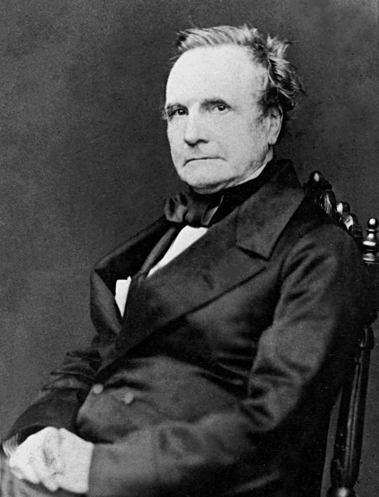

Charles Babbage foi um cientista, matemático, filósofo, engenheiro mecânico e inventor inglês nascido em Teignmouth, Devon, que originou o conceito de um computador programável junto à condessa de Lovelace, Augusta Ada King.

Nascimento: 26 de dezembro de 1791 / Londres
Morte: 18 de outubro de 1871 (79 anos) / Londres
Seus principais marcos na história
Conhecido e, de certa forma, referenciado como o inventor que projetou o primeiro computador de uso geral.
Inventor da máquina diferencial 2.
Medalha de Ouro da Royal Astronomical Society (Vencedor em 1820)
Publicou diversos artigos sobre matemática, estatística, física e geologia. Também colaborou para a modernização do sistema de código postal inglês, além de ser o primeiro matemático que conseguiu colocar em desuso a cifra de Vigenère, utilizando métodos de cripto-análise (análise de frequência).